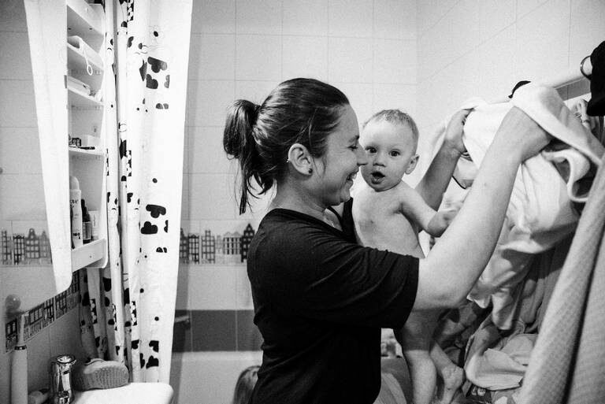
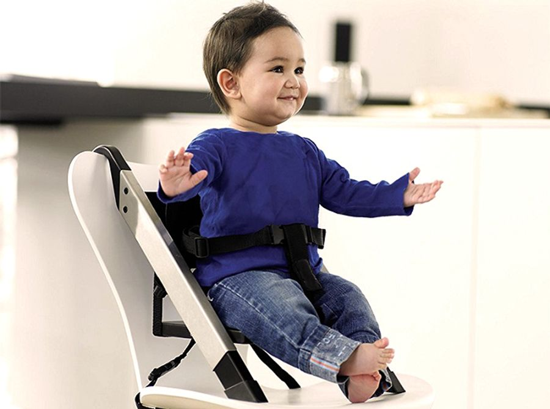
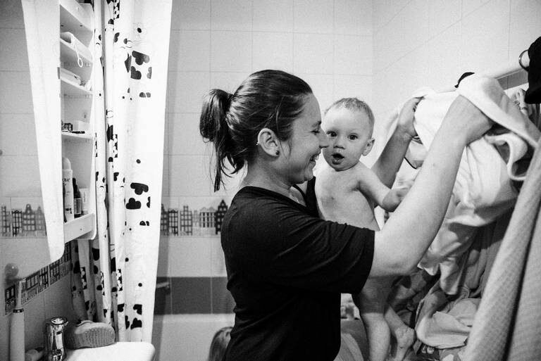
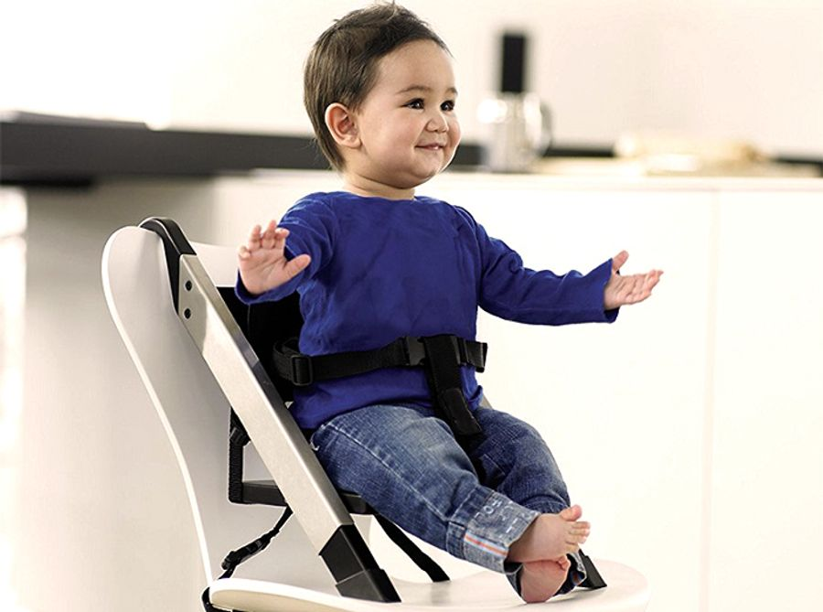

Семья Ивановых
В семье Ивановых живут пять человек: папа Сергей, мама Анна, дедушка Михаил, бабушка Валентина и сын Макс.
Папа Сергей — заботливый и трудолюбивый человек. Он работает инженером и всегда старается обеспечить семью всем необходимым. Сергей любит проводить время с детьми, играет с ними в футбол и учит их кататься на велосипеде. Он также увлекается рыбалкой и часто берет с собой Макса и других детей на природу.
Мама Анна — добрая и заботливая женщина. Она работает учителем начальных классов и очень любит свою профессию. Анна всегда поддерживает Макса и других детей в учебе, помогает им с домашними заданиями. Она также увлекается кулинарией и часто радует семью вкусными блюдами.
Дедушка Михаил — мудрый и опытный человек, который всегда готов поделиться своими знаниями. Он был военным и теперь на пенсии. Михаил рассказывает Максу и другим внукам интересные истории о своей молодости и учит их важным жизненным урокам. Он также любит заниматься садоводством и вместе с бабушкой ухаживает за огородом.
Бабушка Валентина — ласковая и заботливая, всегда готова поддержать своих внуков. Она обожает вязать и шить, а также готовит вкусные пироги для всей семьи. Валентина часто проводит время с Максом и другими детьми, читая им книги или играя в настольные игры.
Макс — младший член семьи, веселый и любознательный мальчик. Он любит играть с папой в футбол, слушать истории дедушки и помогать бабушке на кухне. Макс хорошо учится в школе, а в свободное время увлекается рисованием и конструированием.
Вместе семья Ивановых проводит много времени за совместными занятиями, поддерживает друг друга и создает теплую, уютную атмосферу в доме.
Истории о семье ивановых
История о папе
Папа Сергей — заботливый и трудолюбивый человек.
Он работает инженером и всегда старается обеспечить семью всем необходимым. Сергей любит проводить время с детьми, играет с ними в футбол и учит их кататься на велосипеде.
Он также увлекается рыбалкой и часто берет с собой своих детей на природу.
История о маме
Мама Анна — добрая и заботливая женщина.
Она работает учителем начальных классов и очень любит свою профессию.
Анна всегда поддерживает своих детей в учебе и помогает им с домашними заданиями.
Она также увлекается кулинарией и часто радует семью вкусными блюдами.
История о дедушке
Дедушка Михаил — мудрый и опытный человек, который всегда готов поделиться своими знаниями.
Он был военным и теперь на пенсии. Михаил рассказывает внукам интересные истории о своей молодости и учит их важным жизненным урокам.
Он также любит заниматься садоводством и вместе с бабушкой ухаживает за огородом.
История о бабушке
Бабушка Валентина — ласковая и заботливая бабушка, которая всегда готова поддержать своих внуков.
Она обожает вязать и шить, а также готовит вкусные пироги для всей семьи.
Валентина часто проводит время с детьми, читая им книги или играя в настольные игры.
История о максе
Макс — младший член семьи, веселый и любознательный мальчик.
Он любит играть с папой в футбол, слушать истории дедушки и помогать бабушке на кухне.
Макс хорошо учится в школе, а в свободное время увлекается рисованием и конструированием.


 


